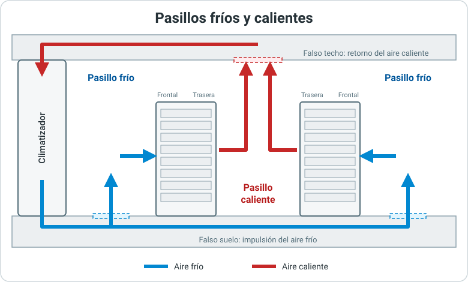
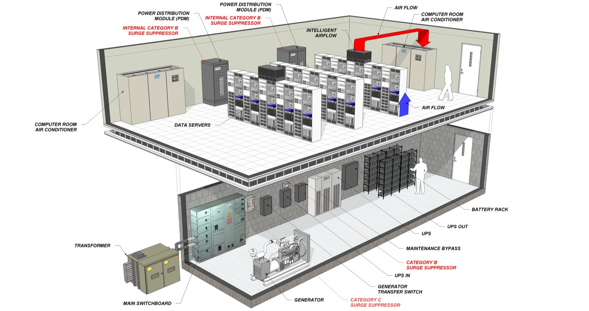

1. Seguridad Física en Centros de Procesamiento de Datos (CPD)¶
1.1. Introducción¶
La seguridad física protege el hardware y las instalaciones frente a amenazas materiales: robos, incendios, inundaciones, cortes de luz o accesos no autorizados. La seguridad lógica protege el software y los datos: contraseñas, permisos, cifrado o antivirus. Las dos se necesitan: el mejor cortafuegos no sirve de nada si alguien puede llevarse el servidor.
Las medidas de seguridad también se clasifican según cuándo actúan:
- Seguridad activa: intenta evitar que ocurra un incidente (control de acceso, antivirus).
- Seguridad pasiva: reduce el daño cuando el incidente ya ha ocurrido (SAI, copias de seguridad, extintores, centro de respaldo).
Este tema trata la seguridad física y pasiva del lugar donde están los equipos más importantes: el CPD.
1.2. Ubicación de los Equipos¶
Centro de Procesamiento de Datos (CPD)¶
Un CPD (Centro de Procesamiento de Datos, en inglés data center) es la sala o edificio donde una organización concentra sus servidores, almacenamiento y equipos de red. Centralizar los equipos tiene ventajas:
- Menos costes: vigilancia, climatización y mantenimiento se pagan una sola vez.
- Mejores comunicaciones: los servidores están cerca y se conectan con cables cortos y rápidos.
- Personal más eficiente: los técnicos trabajan en un solo sitio, sin desplazamientos.
La contrapartida es que el CPD se convierte en un objetivo crítico: si falla, falla todo. Por eso hay que protegerlo especialmente.
Plan de Recuperación ante Desastres¶
Un plan de recuperación ante desastres (DRP, Disaster Recovery Plan) es un documento escrito con antelación que indica qué hacer si el CPD sufre un problema grave. En plena crisis no hay tiempo para pensar: hay que seguir pasos ya decididos.
El plan debe recoger, como mínimo:
- Hardware: inventario de servidores y equipos de red, y qué alternativas hay si fallan.
- Software: sistemas operativos y aplicaciones, con versiones, configuraciones, usuarios y permisos.
- Datos: dónde se almacenan (discos locales, cabinas, nube) y cómo se hacen y restauran las copias de seguridad.
- Procedimientos: quién hace qué, en qué orden y a quién se avisa.
Un plan desactualizado es casi tan malo como no tener plan
El plan se debe actualizar con cada cambio en el CPD (servicios o equipos nuevos) y probar periódicamente.
1.3. Protección del CPD¶
Ubicación del Edificio¶
El primer paso es elegir bien dónde se construye o alquila el CPD:
- Zonas con poco riesgo de desastres naturales: terremotos, inundaciones, incendios forestales.
- Lejos de riesgos externos: ríos, costa, presas, aeropuertos, autopistas, bases militares, centrales nucleares o industrias con productos inflamables o explosivos.
Ubicación dentro del Edificio¶
Lo mejor es una planta intermedia:
| Planta | Riesgo |
|---|---|
| Sótano | Inundaciones. |
| Planta baja | Sabotajes, robos, impacto de vehículos. |
| Última planta | Filtraciones del tejado, rayos, incendios que suben desde plantas inferiores. |
Además, conviene que el edificio tenga dos accesos por calles diferentes, por si una queda cortada.
Medidas Constructivas y de Acceso¶
- No señalizar el CPD: cuanta menos gente sepa dónde está, mejor.
- Acceso restringido: solo personal autorizado, con registro de entradas (se amplía en el apartado 1.7).
- Pasillos anchos y muelle de carga: para mover racks y equipos voluminosos.
- Falso suelo y falso techo: espacio para el cableado y para la circulación del aire frío.
- Altura suficiente de la sala para el falso suelo, el falso techo y racks altos.
- Paredes con pintura que no desprenda polvo y mobiliario ignífugo (que no arde) y antiestático.
- En instalaciones de alta seguridad, paredes de hormigón reforzado.
Protección contra Incendios¶
- Detección temprana: detectores de humo, también bajo el falso suelo y sobre el falso techo, donde pasa el cableado.
- Extinción automática por gas: gases inertes (como el IG-541) o agentes limpios (como el FM-200 o el Novec 1230) que apagan el fuego sin dañar los equipos.
- Extintores manuales de CO₂, adecuados para fuegos eléctricos.
Agua y electrónica
Los rociadores de agua apagan el fuego, pero también destruyen los equipos. En un CPD se prefieren los sistemas de gas. Si hay rociadores (a veces los exige la normativa del edificio), deben ser de preacción: la tubería está seca y solo se llena cuando se confirma el incendio.
Aislamiento y Protección Ambiental¶
Los circuitos electrónicos son sensibles al entorno:
- Temperatura: los equipos generan mucho calor, sobre todo con muchos equipos en poco espacio.
- Humedad: si es baja, aparece electricidad estática; si es alta, condensación y corrosión. Se recomienda una humedad relativa en torno al 40-60 %.
- Interferencias electromagnéticas: alejar el CPD de motores y generadores y, si hace falta, usar blindaje.
- Ruido: los ventiladores son molestos y dañinos para el personal; conviene aislamiento acústico.
Equipos fuera del CPD¶
No todos los equipos están en el CPD. Portátiles, ordenadores de oficina y armarios de red también necesitan protección física:
- Armarios rack con llave para switches y routers de cada planta.
- Candados Kensington: cable de acero que ancla el portátil o el monitor a la mesa.
- Chasis con cerradura y precintos en los ordenadores: impiden abrir la caja para robar discos o memoria, o delatan que alguien la ha abierto.
1.4. Ventilación y Climatización¶
Los CPD no suelen tener ventanas: la ventilación natural no basta para tanto calor y una ventana es un punto de entrada para intrusos.
- La temperatura del aire que entra a los equipos debe mantenerse estable. La guía de referencia (ASHRAE) recomienda entre 18 y 27 °C; muchos CPD trabajan entre 20 y 24 °C.
- La climatización debe ser redundante (N+1): si se necesitan N equipos de aire, se instala uno más por si alguno falla.
- Sistemas de monitorización de temperatura y humedad con alarmas.
En CPD grandes se organizan pasillos fríos y calientes:
- Los racks se colocan en filas enfrentadas: frente con frente y trasera con trasera.
- El pasillo frío recibe el aire frío (normalmente a través del falso suelo) y los equipos lo aspiran por delante.
- El pasillo caliente recoge el aire caliente que sale por detrás de los equipos y lo devuelve a la climatización.
- Así el aire frío y el caliente no se mezclan y la refrigeración es más eficiente.

1.5. Suministro Eléctrico¶
Sin electricidad no hay CPD. Las medidas básicas son:
- Dos acometidas eléctricas independientes (dos líneas de entrada de la compañía eléctrica), si es posible.
- Instalación separada del resto del edificio: una avería en otra planta no debe afectar a los servidores.
- Fuentes de alimentación redundantes en los servidores, cada una conectada a una línea distinta.
- SAI para cortes cortos y anomalías de la corriente. Se estudian en detalle en el apartado 2.
- Generador (normalmente diésel) para cortes largos.
El siguiente esquema muestra el camino de la electricidad hasta el servidor. Si falla cualquier elemento, siempre hay otro camino:
flowchart LR
A1["Acometida 1"] --> CT["Conmutador de<br>transferencia"]
A2["Acometida 2"] --> CT
GE["Generador<br>diésel"] -.->|"si fallan<br>las acometidas"| CT
CT --> SAI1["SAI A"]
CT --> SAI2["SAI B"]
SAI1 --> PDU1["PDU A"]
SAI2 --> PDU2["PDU B"]
PDU1 -->|"fuente 1"| SRV["Servidor"]
PDU2 -->|"fuente 2"| SRV- El conmutador de transferencia (transfer switch) elige automáticamente la línea que tiene corriente y arranca el generador si fallan las dos acometidas.
- El SAI mantiene la corriente durante los segundos que tarda el generador en arrancar.
- La PDU (Power Distribution Unit) es la regleta del rack que reparte la corriente entre los equipos.
En un CPD real todos estos elementos ocupan bastante espacio. Esta ilustración muestra cómo se reparten: arriba, la sala de servidores con los racks y los climatizadores; abajo, la sala eléctrica con el transformador, el cuadro general, el generador, el SAI y sus baterías.

| Término en la imagen | Significado |
|---|---|
| Computer room air conditioner | Climatizador de la sala (en inglés se abrevia CRAC). |
| Data servers | Racks de servidores. |
| Power distribution module | Cuadro que reparte la corriente a los racks (PDU). |
| Transformer | Transformador: adapta la tensión de la red eléctrica. |
| Main switchboard | Cuadro eléctrico general. |
| Generator | Generador diésel. |
| Generator transfer switch | Conmutador de transferencia entre la red y el generador. |
| UPS / UPS in / UPS out | SAI y sus líneas de entrada y salida. |
| Battery rack | Estantería de baterías del SAI. |
| Maintenance bypass | Puente que permite revisar el SAI sin cortar la corriente a los equipos. |
| Surge suppressor | Protector contra sobretensiones (picos de tensión). |
| Air flow | Flujo de aire. |
1.6. Comunicaciones¶
Para asegurar la continuidad de las comunicaciones, es recomendable contratar servicios con dos proveedores de Internet distintos. El segundo proveedor debe ofrecer una tecnología diferente para minimizar la posibilidad de fallos simultáneos. Además, es importante que las rutas de comunicación sean independientes y que las entradas al edificio estén en diferentes puntos. Considerar una tercera opción inalámbrica puede proporcionar cobertura adicional en caso de problemas físicos en la infraestructura.
1.7. Control de Acceso y Seguridad¶
La seguridad en el CPD es fundamental. En instalaciones importantes, se puede contar con un equipo de seguridad propio y especializado en el control de acceso. La instalación de sensores de presencia, cámaras de vídeo y sistemas de monitoreo contribuye a una vigilancia efectiva. Los detectores de metales y escáneres evitan el acceso con objetos peligrosos y previenen la sustracción de equipos. Los sistemas biométricos, como la identificación por huellas digitales, reconocimiento facial o iris, aumentan el nivel de seguridad. Es esencial mantener registros detallados de acceso para auditorías y cumplimiento normativo.
Ejercicio 1: Seguridad en los CPD de Google
Mira el vídeo Google Data Center Security: 6 Layers Deep (en inglés), en el que Google muestra las seis capas de seguridad física de sus centros de datos. También puedes consultar la página Six layers of data center security. Describe brevemente cada capa y relaciónala con las medidas vistas en este tema.
Solución: Ejercicio 1
- Límites de la propiedad: señalización y vallado alrededor de las instalaciones.
- Perímetro seguro: vallas antiescalada, barreras para vehículos, cámaras térmicas y patrullas de vigilancia.
- Acceso al edificio: varios puntos de control con tarjeta identificativa y escáner de iris.
- Centro de operaciones de seguridad (SOC): equipo que vigila las instalaciones 24 horas, 365 días al año.
- Sala de servidores: acceso muy restringido, con varios factores de autenticación.
- Sala de destrucción: donde se destruyen físicamente los discos retirados. Solo accede personal autorizado.
Relación con el tema: las capas 1 a 3 corresponden a la ubicación y el control de acceso (apartados 1.3 y 1.7): vallado, vigilancia, tarjetas y biometría. La capa 4 es la vigilancia continua con cámaras y registros. La capa 5 aplica el principio de que solo entra quien lo necesita, con varios factores de autenticación. La capa 6 enlaza con el borrado seguro de la información, que veremos en el apartado 5 de esta unidad.
1.8. Centro de Respaldo (CR)¶
Necesidad del CR¶
Es fundamental prever la posibilidad de que una catástrofe destruya el CPD principal, ya sea por inundación, terremoto o sabotaje. La empresa no debe depender de un solo punto de fallo, por lo que es necesario contar con un centro de respaldo.
Implementación del CR¶
Si el presupuesto lo permite, se debe instalar un segundo CPD que funcione como centro de respaldo y ofrezca los mismos servicios que el CPD principal. Si la inversión es elevada, se puede optar por limitarse a los servicios principales o ofrecer los mismos servicios con menores prestaciones. Es crucial que el CR esté ubicado físicamente alejado del CP para evitar que una misma catástrofe afecte a ambos.
flowchart LR
U(["Usuarios y clientes"])
subgraph CP["Centro principal (CP)"]
S1["Servidores"] --- D1[("Datos")]
end
subgraph CR["Centro de respaldo (CR)<br>a cientos de km"]
S2["Servidores<br>en espera"] --- D2[("Copia de<br>los datos")]
end
U -->|"funcionamiento normal"| CP
U -.->|"solo si falla el CP"| CR
D1 ==>|"réplica en tiempo real"| D2Operación del CR¶
El centro de respaldo está en espera (stand-by) para sustituir al CP en caso de fallo. Los usuarios no deben notar el cambio al CR. Para lograrlo, es necesario implementar mecanismos de replicación de información en tiempo real, prestando especial atención a las bases de datos. Esto requiere excelentes comunicaciones entre el CP y el CR. Además, se deben tener procedimientos de conmutación documentados y probados regularmente, incluyendo la recuperación posterior del CP. Realizar pruebas anuales de cambio al CR asegura que tanto los documentos como el personal estén preparados para una eventual emergencia.
1.9. Entornos de Producción y Preproducción¶
El CP y el CR constituyen los centros de producción que dan servicio a empleados y clientes. Es importante gestionar adecuadamente los cambios en las aplicaciones, evitando instalarlos directamente en producción. Los fallos no detectados pueden bloquear áreas de la empresa, por lo que se utilizan entornos de preproducción o pruebas para validar los cambios. La implementación de prácticas DevOps y pipelines de Integración Continua y Despliegue Continuo (CI/CD) permite automatizar y controlar los despliegues, reduciendo riesgos y mejorando la eficiencia.
1.10. Conclusiones¶
La seguridad pasiva en un CPD es esencial para garantizar la continuidad del negocio y proteger los activos críticos de una organización. La implementación de medidas adecuadas en la ubicación, protección física, control ambiental, suministro eléctrico (con SAI correctamente dimensionados y revisados), comunicaciones y control de acceso es fundamental. Además, contar con un centro de respaldo y prácticas sólidas de gestión de cambios asegura que la empresa pueda recuperarse ante desastres y mantener sus operaciones sin interrupciones significativas.
Referencias¶
- Six layers of data center security (Google) y su vídeo Google Data Center Security: 6 Layers Deep.